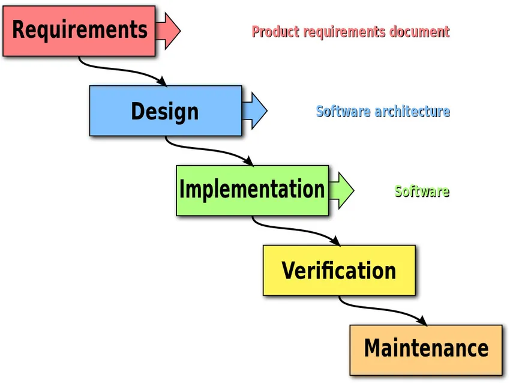
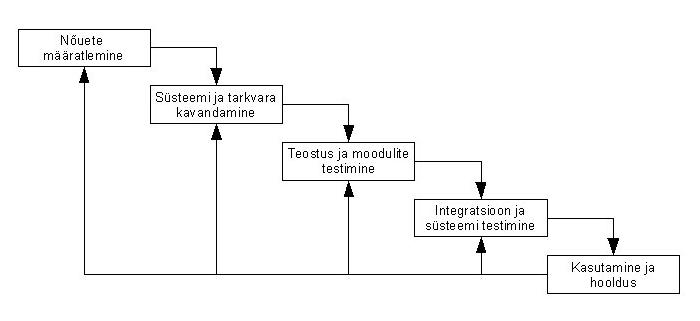
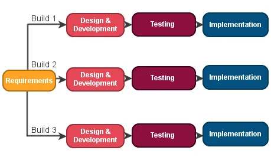
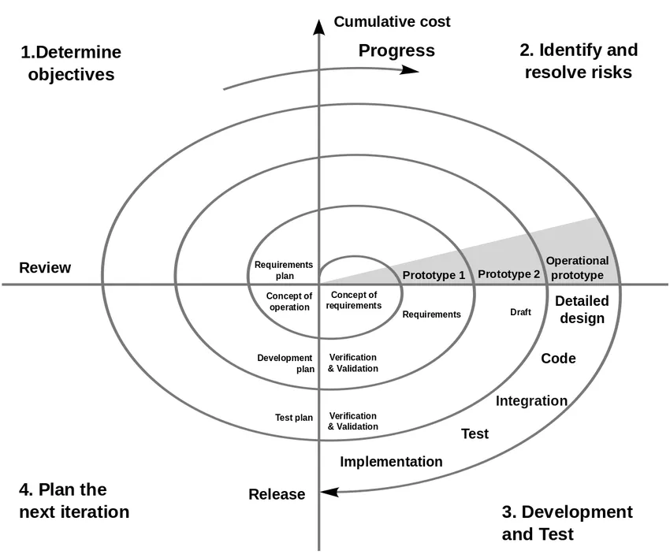
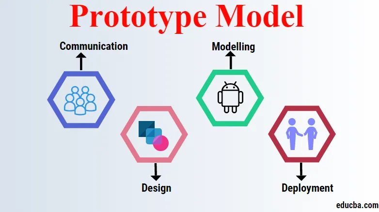
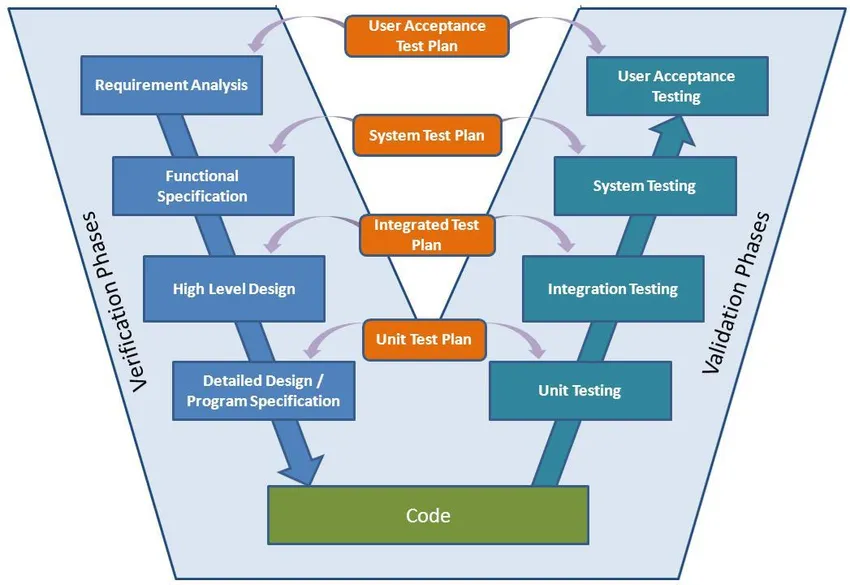

Koskmudelis jaguneb kogu tarkvaraarenduse protsess etappideks, kus ühe faasi väljund toimib järgmise faasi sisendina.
Järgmine etapp algab alles siis, kui eelmine etapp on lõpule jõudnud.
Koskmudel (ka klassikaline mudel) on esimene kirjeldatud tarkvarasüsteemi elutsükli mudel, mis lähtus tavalistest tootmisprotsessidest ehituses, mehhaanikas vms.
Mudeli kirjeldas Winston W. Royce 1970. aastal. Koskmudel on kõige vanem ja kõige rohkem kritiseeritud protsessimudel.
Põhiidee kohaselt jagatakse tegevused nii, et iga tegevus toimub jadamisi eraldi etapina.
Royce jagas protsessi järgmisteks põhietappideks (tasub tähele panna, et etappide nimekiri varieerub erinevate autorite esituses):
Nõuete määratlemine
Süsteemi ja tarkvara kavandamine
Teostus ja moodulite testimine
Integratsioon ja süsteemi testimine
Kasutamine ja hooldus - tavaliselt kõige pikem faas
Iga faasi tulemiks on üks või mitu dokumenti, mis kinnitatakse. Järgmine faas ei tohiks alata enne, kui eelmine on lõpetatud.
Faasidel on teatav ülekate ja info edastamine ühest teise.


See mudel algab väiksemate nõudmistega ja SDLC protsessi käivitamiseks ei vaja see toote spetsifikatsiooni täielikku konteksti.
See protsess on korduv ja iga SDLC protsessi kordamise korral tehakse tarkvara uuem versioon.
Iga iteratsioon võib kesta 2–6 nädalat. Iga iteratsioon arendab selles lähenemises eraldi komponenti. See mudel nõuab ka režiimiressurssi kui jugamudel.

See mudel on kombinatsioon juga- ja spiraalmudelist ning töötab korduvalt.
Projektiga seotud riskide põhjal juhendab see mudel meeskonda ühe või mitme SDLC mudeli, näiteks juga või Iteratiivse mudeli elementide vastuvõtmisel.
Siin jagatakse tarkvara elutsükkel väiksemateks osadeks ja tarkvarale saab lisada uusi funktsioone isegi SDLC hilises staadiumis.

Mittetäieliku tarkvaraprogrammi ja selle versioonide väljatöötamiseks kasutatakse prototüüpimudelit.
See on tarkvara arendamise meetod. Seda kasutatakse lõpptoote varasema versiooni loomiseks ja testimiseks.
See on iteratiivne protsess ja see mudel töötab peamiselt olukordades, kus nõuded on olemas aegsasti.
Prototüübi mudelis tuleks nõue võimalikult detailselt määratleda. Kujundus on välja töötatud uue süsteemi jaoks ja sellest disainist luuakse esimene prototüüp.
Prototüübi mudelis koostatakse tööprogrammid kiiresti.

V-mudel on põhimõtteliselt laiendus jugamudelile, kus katsetamine ja arendusetapid on kavandatud paralleelselt.
Üks pool koosneb verifitseerimisetapist, teine aga valideerimisetapist, mis ühendatakse lõpuks kodeerimisega. Järgmine olek algab alles siis,
kui eelmine olek on lõpule viidud.

Agiilne mudeliprotsess SDLC-s hõlbustab arendajaid meeskonnaga suhtlemisel ja annab kliendile käimasoleva projekti kohta täieliku idee ning teeb vajadusel muudatusi.
See paneb arendajad muudatusi tegema vastavalt kliendi interaktsioonile ja säästab ümbertöötamisel palju aega.
Kuna see lähenemine töötab arendamisel ja testimisel käsikäes, töötavad arendajad ja testijad koos.